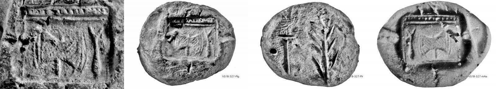
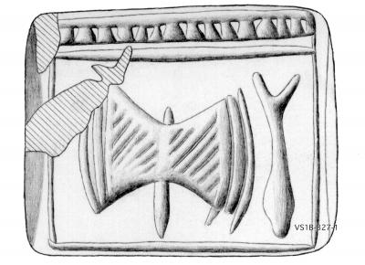

-
SAMWa1
Names
SAMWa1, SAM Wa 1
Support
Nodule
Location
Samothrace
Findspot
Unavailable


Scribe
Unavailable
Context
Middle Minoan II
1800-1650 BCE
Dimensions
Catalogue
Readings
1 1 0 JA none
1 1 0 SA none
1 1 1 SA none
1 1 1 RA none
1 1 2 TE none
1 1 3 10 none
1 1 4 ¹⁄₁₆ none
𐘱𐘞𐘞𐘴𐘃𐄐𐝇
JASASARATE10¹⁄₁₆
𐘱𐘞𐘞𐘴𐘃𐄐𐝇
JASASARATE10¹⁄₁₆
SAM
Wa 1
(SamM EEE 769;
CMS
V Suppl. 1B no. 327:
nodulus
impressed by a cushion seal carrying the Hieroglyphic inscription JA-SA
<-SA-RA>, CHIC #137), MM II context
|
statement
|
logogram
|
number
|
fraction
|
|
H:
JA-SA
<
-SA-RA
>
|
TE
|
10
|
K
|
Commentary © John Younger
References